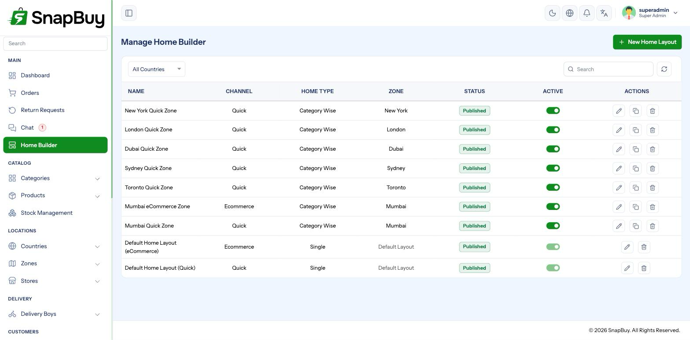
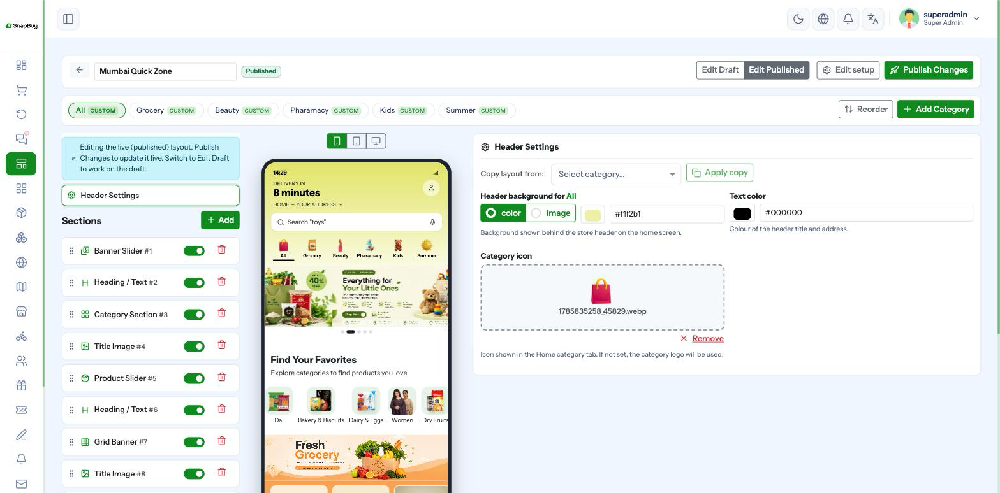
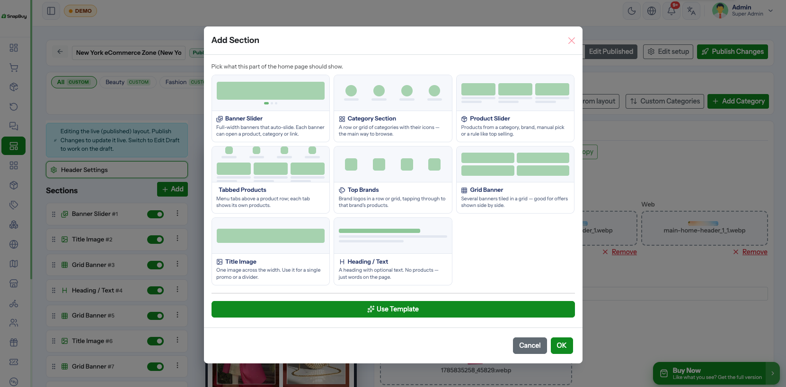
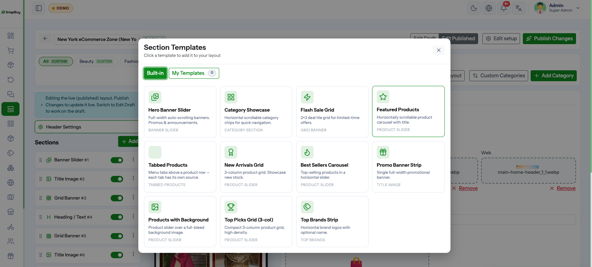

Home Builder
Setup Guide step 4 of 9. Menu path: Home Builder
The Home Builder controls what customers see on the home screen of the apps and the web portal. Without a published layout the home screen is empty, no matter how many products you have.
You assemble a layout from sections — banner sliders, category grids, product rows — arrange them by dragging, preview them, and publish when ready.

Draft and published — how safety works
Every layout stores two complete copies of itself:
| Copy | What it is |
|---|---|
| Draft | What you are editing. Never visible to customers. |
| Published | What customers actually see right now. |
Editing only ever touches the draft. Customers keep seeing the published version until you press Publish, which copies the draft over the published copy and stamps the publish time.
You cannot break the live home screen by editing
Because edits land in the draft, you can rebuild a layout over several days with customers unaffected. Nothing goes live until you publish.
Scheduled publishing
Instead of publishing immediately, set a scheduled publish time. The layout goes live automatically at that moment — useful for sale launches and festival campaigns going live at midnight.
Scheduled publishing needs the cron job
The scheduled publish is performed by home-layout:publish-scheduled, run by the scheduler every minute. If the cron job is not set up, scheduled layouts never go live — and nothing warns you.
Verify the cron heartbeat is green before relying on a scheduled campaign.
Publishing clears the schedule, so a layout cannot publish twice.
Creating a layout
Home Builder → Create.

| Field | Meaning |
|---|---|
| Name | Internal label — "Diwali Home", "Default Quick" |
| Mode | Quick or eCommerce — which channel this layout serves |
| Channel Label | Optional customer-facing name for the channel, per language |
| Home Type | Single or Category-wise |
| Zone Scope | Global or a specific zone |
| Active | Inactive layouts are never served |
Mode
A layout serves exactly one channel. If you sell on both quick and eCommerce, you need at least two layouts.
Zone scope
| Scope | Behaviour |
|---|---|
| Global | Serves every zone that has no layout of its own |
| Zone | Serves one specific zone, overriding the global layout |
Always keep one global layout per mode
Zone-specific layouts override the global one for that zone. If a zone has no layout and no global layout exists for its mode, its customers get an empty home screen. Build a global layout first, then add zone overrides only where you need different merchandising.
Home type
| Type | What the customer sees |
|---|---|
| Single | One continuous home screen |
| Category-wise | Category tabs across the top, each with its own layout |
For Category-wise, pick which categories become tabs. Category Scope decides whether both channels share the same tab list (same) or each has its own (split).
Section types
Seven section types are available.
| Section | What it renders |
|---|---|
| Banner Slider | Swipeable full-width promotional banners |
| Category Section | Grid or row of categories |
| Product Slider | A horizontal row of products |
| Top Brands | Brand logos |
| Grid Banner | Several banners in a fixed grid |
| Title Image | A single image with a heading |
| Heading / Text | A text heading between sections |

Drag sections to reorder. The order in the editor is the order customers see.
Product Slider data sources
A product slider is the most-used section, and the data source decides which products fill it.
| Source | Fills with |
|---|---|
| Manual | Exactly the products you pick, in your order |
| Top Selling | Best sellers by units sold |
| Trending | Products gaining traction recently |
| New Arrivals | Most recently added |
| Discounted | Products currently on offer |
| Best Rated | Highest customer ratings |
| Category | Everything in a chosen category |
| Brand | Everything from a chosen brand |
| Recently Visited | Personalised — what that customer viewed |
| Buy Again | Personalised — what that customer ordered before |
| Most Favorited | Most wishlisted |
Automatic sources keep themselves fresh
"Top Selling" and "New Arrivals" re-evaluate on every request, so the home screen stays current with no work from you. Use Manual only when the exact products and their order matter — a campaign row, for example.
Personalised sources look empty to new customers
Recently Visited and Buy Again have nothing to show a first-time customer. Do not place them at the top of the home screen — put them lower, below sections that always have content.
Banners and redirects
Every banner and grid tile can carry a redirect — where the customer lands on tap:
- A product
- A category
- A brand
- An external URL
- Nothing (decorative)
Check redirects after catalogue changes
A banner pointing at a deleted or deactivated product leaves customers tapping into an error. After removing products or categories, review banners that referenced them.
Images and platforms
Banner images accept jpeg, jpg, png, gif, webp and svg, up to 5 MB each.
Sections support per-platform dimensions and aspect ratios, so the same section can be sized differently on mobile and web rather than being cropped awkwardly.
Upload at the aspect ratio you set
Uploading a wide desktop banner into a square mobile slot crops the middle out and usually cuts the text off. Export each size separately.
Multi-language text
Home Builder text — headings, labels, channel names — is stored per language inside the layout itself. Switch language in the editor and enter the translation for each text field.
Missing translations fall back to the default language, so a partly translated layout still renders.
Templates
A section you have configured can be saved as a template and reused in other layouts, keeping merchandising consistent across zones and campaigns.

Preview
The editor previews the layout as the apps will render it. Use it before publishing — section order and image cropping problems are far easier to spot here than after going live.

Troubleshooting
| Symptom | Cause | Fix |
|---|---|---|
| Home screen empty | No published layout for that mode/zone | Publish a global layout for the mode |
| Edits not visible to customers | Still in draft | Press Publish |
| Scheduled layout never went live | Cron job missing | See Cron Job Setup |
| Some zones show a different home screen | A zone-specific layout is overriding the global one | Check the zone-scoped layouts |
| A product row is empty | Automatic source has no qualifying products, or personalised source with no history | Switch to Manual, or move the section lower |
| Banner text cropped on mobile | One image used for all platforms | Upload per-platform sizes |
| Banner tap leads to an error | Redirect target deleted or inactive | Update or clear the redirect |
Checklist
- One global layout published per mode you sell on
- Sections ordered with always-populated content at the top
- Personalised sources placed lower down
- Banner images uploaded per platform, under 5 MB
- Redirects tested
- Text translated into every active language
- Previewed before publishing
- Cron verified if using scheduled publishing